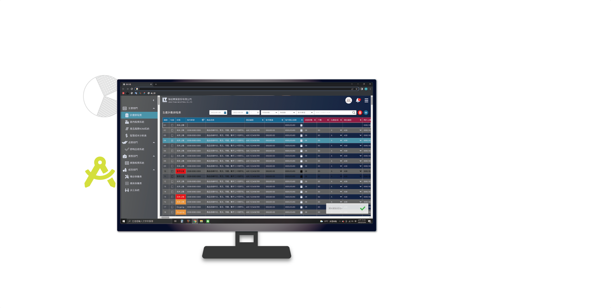
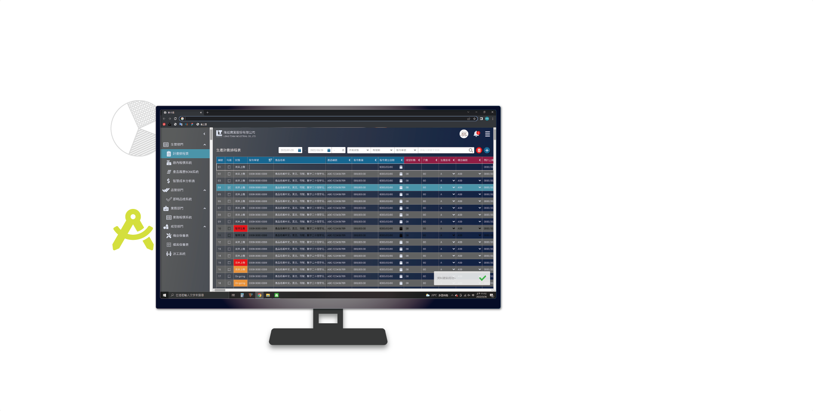

一間工廠，光是這五點，一年就讓你損失上百萬 !!
(一)機台狀態不明 (二)無法掌握各產線不良率 (三)各廠區機台稼動率不明 (四)製令單過期 (五)排程混亂不透明

 

(一)機台狀態不明 (二)無法掌握各產線不良率 (三)各廠區機台稼動率不明 (四)製令單過期 (五)排程混亂不透明

01.能提醒將要到期的製令單 02.製令單妥善分配於各機台 03.彈性調整調配於各產線
01.機台各狀態能夠即時統計 02.即時反應各產線機台狀況 03.停機原因能即時回饋
01.即時品檢系統反應產品不良原因 02.管理者可根據狀況來即時止損 03.讓產線狀況更透明
當廠內已經擁有使用超過10年以上的ERP，管理層年紀平均45+，產線都是越南人，我們要如何結合已有使用習慣與語言隔閡，並提升系統管理效率?
我們與各機台廠商、ERP系統商取得共識，讀取機台稼動狀態與ERP資料，透過串接API 抓取數據並整合後設計能讓小廠產線管理的系統，讓管理者能隨時掌握各產線機台狀況、不良率等。

串接ERP與機台API，從產品履歷到產線資訊，每個環節解構後整合！！(我們根據廠內定義系統流程後，幫各部門需求進行系統開發)
1.串接ERP資料
-透過ERP抓取製令單的資料，例如交期、數量
2.建立產品履歷
-建立產品需要的所有物料、製程順序、個物料成本
3.生產計劃排程表
-根據製令單需求安排機台與順序
4.排程甘特圖
-顯示各機台所有任務的甘特圖
5.派工系統
-指派產線、負責人員、輪班人員、即時不良統計
6.品管巡檢
-不良品統計與複驗
7.機台狀態切換
-當機台訊號異常時，且要有彈性讓現場人員切換狀態
8.機台稼動率統計與戰情資訊
-串接各廠區、各產線機台稼動狀況、即時不良統計

在進行設計前，我們反覆跟管理層、生管、產線的使用者討論色彩於廠內任務的意義，客戶原本希望各種狀態與情境都有專屬的色彩，但當一間忙碌的工廠，過多的訊息只會造成認知負荷 最後我們將狀態分成 危急、異常、正常、測試、停滯等大狀態，分別用五種顏色區分。
以色彩來當作處理任務順序的依據!!

定義該系統色彩、文字系統、物件間距、元件變數資料，與互動色彩回饋等物件變數，並將視覺標準化 ! !
建立各項物件變數，以運用在Figma Auto layout 1.定義該系統主要色、次要色與互動回饋色彩庫 2.定義物件間距，文字與icon數值 3.建立文字大小、粗細、段落間距等文字庫 4.陰影大小、模糊數值、線條粗細數值

01.該產品的名稱、客戶
01.按順序建立製程 02.製程所需要的物料 03.此產品的模具編號
透過Linetrack產品履歷，我們整合各製程所需的物料、人力、生產流程與物流，讓業務即時整理記錄，並掌握產品初步成本，提供報價依據並優化生產計劃。
1.將所有製程、人事成本做統計
-LineTrack根據製程所需物料，填寫時價並計算
2.電費與人事費用
-LineTrack也讓使用者納入機台電費計算
-同時也考慮人事成本與物價通膨等彈性計算
-除了產線人事，也加入管銷研的人事成本計算
3.委外製成與出貨
-考慮不是所有製程都是廠內，LineTrack也提供廠外製程紀錄
-最後物流環節，我們根據不同運輸類型，讓使用者選擇並建檔


01.從ERP抓取訂單資料 02.分配機台與產線 03.對訂單狀況一目了然
01.黃色是即將到期 02.紅色是已經過期
01.可像Excel自由輸入、更新與刪除 02.因應產線狀況彈性調整產線 03.可彈性插單、換線、換機台
派工系統會根據計畫排程表所輸入產線、機台、成型條件、模具等資訊做整合，讓每筆單據目前狀態可清晰呈現給產線人員，不再超量或延遲生產，同時 提供即時品檢功能，讓產線人員和品管能第一時間掌握線上產品狀況。
選擇產線、機台 1.先選擇產線、機台 2.派工系統會把屬於該機台的單據，依使用者所選條件呈現
選擇生產單據 3.選擇共模的產品單據 4.介面有越南文切換，提供給現場越南朋友
生產資訊透明 5.生產單據會顯示目前生產多少數量 6.就算臨時插單，事後也能追朔 7.生產負責人、各區間的產線人員、批次等資訊
即時統計不良數量 8.根據所選生產單據，讓產線人員能即時統計各個產品不良數量 9.能根據各批次來統計不良數
嚴格品管雙重把關，確保生產零浪費！ 品管人員會定時在產線上巡檢，並根據派工上的統計數據、不良種類，進行不良品數量的驗證，雙重保險讓產線能在第一時間調整生產方針，減少損失 !! 也確認機台目前生產狀況，填寫停機原因同時也回報給戰情畫面，讓管理者能了解目前各廠機台情況 !

我們幫助客戶從產品履歷建檔、訂單排程、產線調整、良率統計、機台狀況調整，管理整廠各流程掌握機台稼動、訂單順序與時程。 我們的目標客群為中小企業，較為精簡的部門合作環境，龐大的ERP除了價格昂貴且不靈活，LikeTarck流程輕巧不複雜，讓管理者能即時掌握現場狀況，並即時調整方針，是你的好夥伴 !!